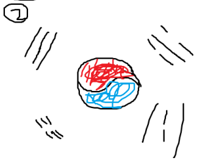
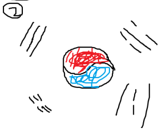

피겨 선수 김연아
대한민국의 전 피겨 국가대표 선수이며, 2009년 4대륙 피겨 스케이팅 선수권 대회 우승, ISU 그랑프리 파이널 3회 우승을 통해 피겨 스케이팅의 여자 싱글 부문에서 4대 국제 대회의 그랜드 슬램을 사상 최초로 달성한 선수이기도 하다.
스켈레톤 선수 윤성빈
대한민국의 전 스켈레톤 선수이며, 2018 평창 동계올림픽에서 혜성같이 등장하였다. 2012년 스켈레톤에 입문하여 3년 8개월 만에 월드컵 우승을 차지했고, 5년 5개월만에 세계 랭킹 1위까지 올랐다. 이어서 3개월 후 대한민국에서 열린 2018 평창 동계올림픽에서는 입문한지 5년 8개월 만에 아시아 최초의 썰매 종목 금메달을 차지했다.
ufc 선수 정찬성
세계 최고의 mma단체인 ufc에서 한국인 최초이고, 유일하게 타이틀 매치(결승전과 비슷한)를 심지어 두번 치른 선수로, 최근 맥스 할로웨이와의 경기에서 패배 후 맥그리거, 찰스 올리베이라, 션 오말리 등 현, 전 챔피언의 샤라웃과 관중들의 함성 소리와 함께 ufc 역사에 길이 남을 은퇴식 명장면을 남기며 은퇴하였다.
 
